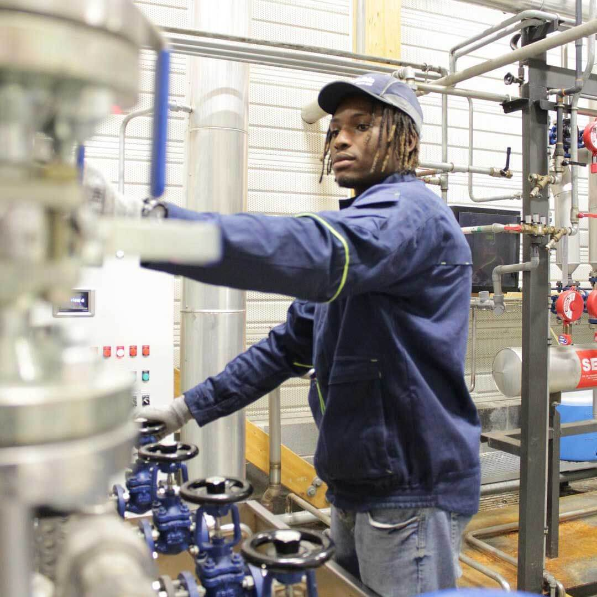

Changer le regard sur
le handicap en entreprise
Les a priori que génèrent le handicap en entreprise à un réel impact sur le quotidien des personnes touchées. Well’come c’est des podcasts, des vidéos, des portraits pour dépasser les préjugés.
Découvrir les portraits
Sekou Dosso
Technicien de maintenance des systèmes et daltonien

« Je peux travailler en toute efficacité, c'est une vraie liberté »
Travaillant chez Dalkia, entre énergies renouvelables et économies d’énergie, Sekou a su dépasser son handicap. Sekou a découvert qu’il était daltonien de type protan. Il a eu du mal à donner un nom aux couleurs, dès son plus jeune âge. Mais ça ne l’empêche pas de travailler et d’être efficace, il lui a seulement suffit plus de travail qu’une personne avec une bonne vision.
Une personnalité débordante d’énergie
Sekou ne considère pas son daltonisme comme un handicap. Au contraire, il croque la vie à pleine dent. Très sportif, il pratique la musculation plusieurs fois par semaine. Il aime rendre service aux autres et est très attaché à sa famille.
« En général, quand je suis au travail, j’essaye d’oublier ce qui s’est passé la veille, et d’avancer malgré mes difficultés. Je relativise tous les jours »
Sofia est malentendante de naissance, est n’a jamais annoncé son handicap lors de sa recherche d’emploi. Car pour elle, Il faut qu’on juge sur les compétences, et qu’on aide si besoin avec des dispositifs adaptés.
Prendre un peu plus de temps, avoir un écran adapté, un siège spécial ou avoir à répéter n’est pas ni plus long ni plus fatiguant que pour les autres qui seraient susceptibles d’être formés à un nouveau poste en entreprise.
Sofia Panetier
Alternante chargé de communication et malentendante

Maxime Klunch
Professeur au collège et malvoyant
« Malgré les difficultés, je ne suis jamais passé par un cabinet de recrutement spécialisé. La plupart du temps, ça ne correspondait pas à mon profil. C’est assez mal fait, et surtout, il y a un mauvais plan de communication à ce niveau. »
Pour Maxime, le handicap au travail est une particularité qui oblige à faire autrement, à créer d’autres liens, à partager l’espace-classe. Certes les élèves le testent, sans doute, et profitent du fait qu’il ne vois pas toute la salle précisément lorsque il est au bureau. Mais pour lui tout se passe fondamentalement bien, il n’a le droit à aucune réflexion.
Ses collègues n’ établissent pas de barrières entre eux et lui, bien au contraire. Néanmoins, il est conscient que son handicap fait porter une responsabilité supplémentaire aux dirigeants du lycée qui l’accueille.